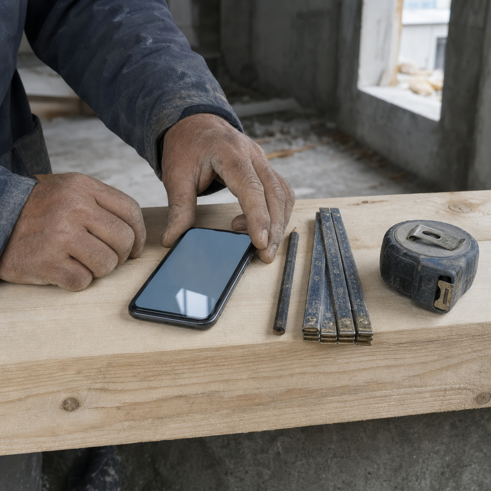

הכל להעתקה ידנית. שום דבר כאן לא נשלח לבד, ושום דבר לא נשלח עדיין.
טרם נשלחגוף שני רבים בקבוצה · יחיד בפרטיבלי מחירים בפוסט

הנייד מונח בשורה אחת עם העיפרון, הסרגל וסרט המדידה — עוד כלי על הלוח. המסך כבוי בכוונה: אין בתמונה אות אחת.
1
הפוסט לקבוצה
גוף שני רבים
זווית ההיכרות, הוק 3. זו הזווית היחידה שלא נוגעת בכאב של אף אחד בקבוצה — ולכן היא לא ניתנת לקריאה כהצבעה על מישהו.
הנוסח המלאזווית 1 · הוק 3
את מערכת התמחור הראשונה בניתי כי לא מצאתי אחת שמדברת בשפה של השטח.
נעים להכיר, אני נימרוד. הנדסאי בניין ומורה דרך, ומי שלמד איתכם <המחזור/הקורס>.
בשנים האחרונות ניהלתי וביצעתי פרויקטים בתחומים מגוונים, ובדרך הקמתי לעצמי מערכות תפעול בשטח.
מחשבון תמחור, מעקב אחרי לידים, סדר בהזמנות מול ספקים — דברים שבניתי כי הייתי צריך אותם.
היום אני בונה את אותם כלים גם לאחרים, תחת השם Craft & System.
מי שרוצה לראות איך זה נראה: https://craftsystem.co.il/
וריאציה קצרהלקבוצה שמקפידה על פרסום
אחרי שנים של ניהול פרויקטים בשטח, בניתי לעצמי את הכלים שהחזיקו אותם.
אני נימרוד, מ־<המחזור/הקורס>. הנדסאי בניין ומורה דרך.
מחשבון תמחור, מעקב לידים, סדר בהזמנות מול ספקים.
היום אני בונה את הכלים האלה גם לאחרים, תחת השם Craft & System.
מי שרוצה לראות: https://craftsystem.co.il/
2
אם מישהו מגיב בקבוצה
מול קהל
התרחיש שבשבילו נכתב הרכיב הזה הוא התגובה הצינית. היא לא תוקפת את המוצר — היא בודקת את המעבר: מישהו שלמד איתך הנדסה עושה עכשיו משהו אחר.
״אז עזבת את הבנייה?״
לא עזבתי, פשוט עברתי לצד שבונה את הכלים. עדיין מריח בטון.
״מה, הפכת לאיש מחשבים?״
ממש לא. אני איש שטח שנמאס לו לתמחר בערב, אז בניתי לעצמי כלי.
״בשביל זה יש אקסל״
נכון, ואצל חלק גדול זה מספיק. אני עוסק במה שקורה כשזה כבר לא.
״עוד אחד שמוכר קורסים״
לא מוכר קורסים ולא מלמד כלום. בונה מערכות לאנשי שטח, וזהו.
״יש כבר מאה כאלה״
יש. אני זה שבא מהצד של הביצוע, וזה כל ההבדל שאני מביא.
תשובה אחת לאדם, ואז עוצרים. אם הוא ממשיך — אימוג'י אגודל ותו לא.
ואם התגובה הפכה אישית — לא עונים בכלל. הקבוצה רואה מי הסלים.
3
הפולואפ בפרטי
גוף שני יחיד
רק כאן עולה שיחת 15 הדקות, ורק כאן עולה מחיר — ואך ורק אם נשאלת עליו שאלה ישירה. הנוסח המלא של שני הפולואפים ושל חמש ההתנגדויות יושב בקובץ ערכת השטח.
אין תזכורת שנייה. מי שהגיב ולא ענה — לא מקבל דחיפה. תזכורת לחבר מהמחזור נקראת כלחץ.
לפני שאתה שולח
למלא את <המחזור/הקורס> — בלי זה אין פוסט. זו הלגיטימציה שלו, לא קישוט.
לבדוק בנורמות הפרסום של כל קבוצה. יש קבוצות עם מנהל שמקפיד.
מי שנמצא בכמה קבוצות יראה את זה כמה פעמים — נוסח מלא באחת, קצר באחרות, ולפרוס בזמן.